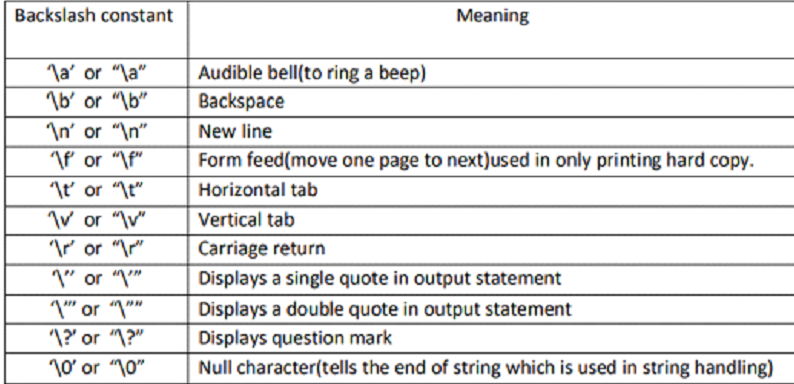

Aula 4 - Bibliotecas, Excel e TXTs
Bibliotecas:
- Repositório das Bibliotecas: https://pypi.org/
-
Comando para instalar bibliotecas externas:
pip install nome_da_biblioteca # Ex.: pip install openpyxl -
Comando para usar biblioteca no código
# Importa a biblioteca com todas as funções dela import nome_da_biblioteca # import xlrd # Importa a biblioteca e permite criar um "apelido" pra ela import nome_da_biblioteca as ndb # Ex.: import pandas as pd # Importa uma função específica de dentro da biblioteca from nome_da_biblioteca import funcao # Ex.: from time import sleep
Manipulação de Arquivos:
-
Abrir o arquivo:
-
Para criar:
arqv = open('nome_do_arquivo.txt', 'w') -
Para ler:
arqv = open('nome_do_arquivo.txt', 'r') -
Para continuar um texto:
arqv = open('nome_do_arquivo.txt', 'a')
-
-
Escrever dentro do .txt:
arqv.write('texto do arquivo') -
Fechar o arquivo:
arqv.close()
Interação com o SO:
-
os:
-
Importar a biblioteca:
import os -
Renomear um arquivo:
os.rename('arquivo_teste.txt', 'arquivo_modificado.txt') -
Remover um arquivo da pasta:
os.remove('arquivo_modificado.txt') -
Listar os arquivos presentes na pasta:
os.listdir('.') -
Aponta a execução do Python para uma pasta em específico:
os.chdir('')
-
-
glob:
-
Importar a biblioteca:
import glob -
Listar arquivos do diretório pela sua extensão:
glob.glob(r'.\*.txt')
-
-
shutil:
-
Importar a biblioteca:
import shutil -
Movimentar um arquivo para outra pasta:
shutil.move('arquivo_modificado.txt', r'.\pasta_move\arquivo_modificado.txt') -
Copiar um arquivo para outra pasta:
shutil.copy(r'.\pasta_move\arquivo_modificado.txt', r'.\arquivo_modificado_copy.txt')
-
Bibliotecas Excel:
xlrd;
-
Importar a biblioteca:
import xlrd -
Abre um arquivo Excel (XLS):
wb = xlrd.open_workbook('banca_jornal.xls') -
Seleciona a aba do Excel:
sheet = wb.sheet_by_name('Planilha1') -
Pega valores da primeira coluna:
for cell in sheet.col(0): cell
openpyxl;
-
Importa a biblioteca:
import openpyxl -
Abrir um arquivo Excel (XLS ou XLSX):
wb = openpyxl.load_workbook('banca_jornal.xlsx') -
Apresenta o nome de todas as abas do Excel aberto:
wb.get_sheet_names() # output: ['Planilha1'] -
Seleciona a aba do Excel:
sheet = wb['Planilha1'] -
Ler o valor da primeira célula (A1):
sheet['A1'].value # output: Chiclete -
Apresentar números de linhas:
sheet.max_row # output: 6 -
Percorre uma coluna inteira do Excel:
# Nesse código, ele não irá pegar o cabeçalho da tabela # Caso queira pegar o cabeçalho, basta trocar o número 2 pelo número 1 for linha in range(2, sheet.max_row+1): nome = sheet.cell(linha, 1) # output: # Chiclete # Barra de Chocolate # Agua mineral # Jornal # Salgadinho -
Pegar valores das três colunas, passando por todas as linhas:
for linha in range(2, sheet.max_row+1): nome = sheet.cell(linha, 1).value unidade = sheet.cell(linha, 2).value valor = sheet.cell(linha, 3).value print(f'O produto {nome*} teve* {unidade} unidades vendidas no valor unitário de R${valor}') # output: # O produto Chiclete foi teve 45 unidades vendidas no valor unitário de R$1 # O produto Barra de Chocolate foi teve 23 unidades vendidas no valor unitário de R$4 # O produto Agua mineral foi teve 66 unidades vendidas no valor unitário de R$2 # O produto Jornal foi teve 4 unidades vendidas no valor unitário de R$0.5 # O produto Salgadinho foi teve 16 unidades vendidas no valor unitário de R$2.5 -
Fechar o arquivo Excel:
pandas:
-
Importar a biblioteca:
import pandas as pd -
Ler arquivo Excel:
df = pd.read_excel('banca_jornal.xlsx') -
Selecionar uma coluna:
df['Produto'] -
Apresenta as abas disponíveis do Excel:
pd.ExcelFile.sheet_names
xlsxwriter:
-
Importar a biblioteca:
import xlsxwriter -
Criar arquivo Excel:
wb = xlsxwriter.Woorkbook('alunos.xlsx') -
Criar aba no arquivo Excel:
ws = wb.add_worksheet('Planilha') -
Colocar palavras em Negrito:
bold = wb.add_format({'bold':1}) -
Escreve cabeçalho em negrito no Excel:
ws.write('A1', 'Nome', bold) ws.write('B1', 'Idade', bold) ws.write('C1', 'Cidade', bold) -
Cria valores para serem adicionados em formato de tabela:
alunos = [('Thomas', '24', 'Curitiba'), ('Fernanda', '12', 'Sao Paulo'), ('Augusto', '56', 'Rio de Janeiro'), ('Marcela', '22', 'Maringa')] -
Looping para escrever valores em formato de tabela:
row = 1 col = 0 for aluno in alunos: ws.write_string(row, col, aluno[0]) ws.write_string(row, col+1, aluno[1]) ws.write_string(row, col+2, aluno[2]) row += 1 -
Fechar e salvar o arquivo Excel:
wb.close()
Extras:
Caracteres especiais:

- Outras opções: https://www.python-excel.org/